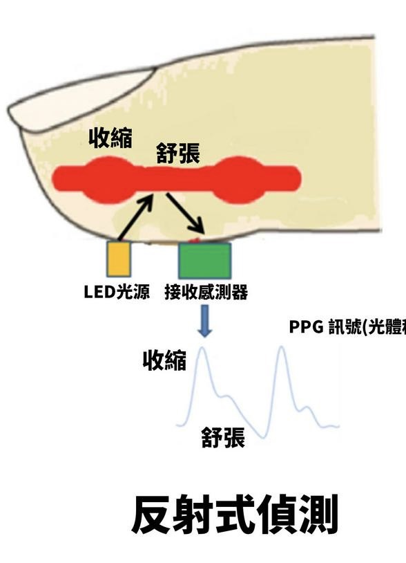

運作原理
血氧監測功能，透過紅色光線的LED與紅外線，穿過皮膚照在手腕上的血管上，以血液顏色測量，來計算血液的微量體積變化，進而判斷血氧濃度的約略值。這個數值被稱為血氧飽和度，用於衡量血液中能夠攜帶氧氣的紅血球的比例。血氧飽和度正常值：95%~100%SpO2 指的是周邊微血管的血氧飽和度，利用「氧合血紅素」與「血紅素」吸光值不同，用波長 660nm 和波長 940nm 的光所測到的數據SpO2 = 氧合血紅素 / (氧合血紅素 + 還原血紅素)
若偵測到血氧飽和度小於95%，智能手錶將發出警示並聯絡緊急聯絡人，再利用AI數據列出血氧過低可能造成之影響以及相關資訊傳輸給緊急聯絡人，使長者的健康問題能被及早發現，並盡速做出應對措施。